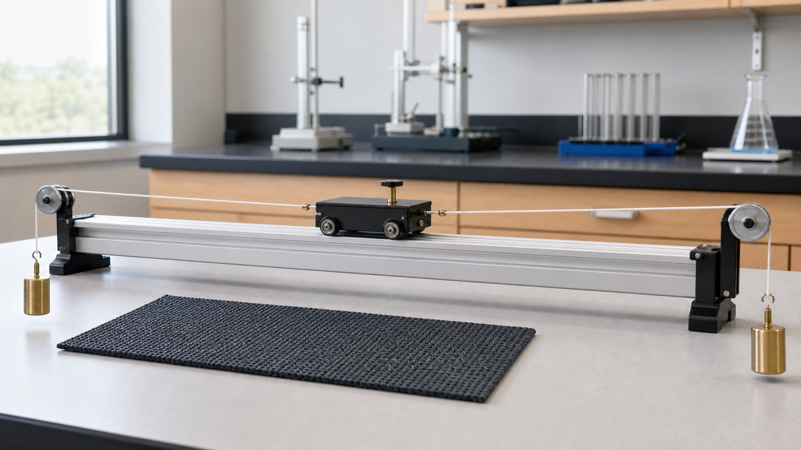

下册 · 第八章 · 运动和力
力改变运动，不负责维持运动
牛顿第一定律纠正直觉，二力平衡解释运动状态为何不变，摩擦力与二力合成则帮助我们分析真实运动。
知识桥梁
上册描述“怎样运动”，下册追问“为什么改变”
速度和参照物描述运动状态；本章进一步判断，物体的运动状态是否因为受力而改变。
上册基础速度与运动状态先描述快慢和方向
本章新知受力与状态改变合力不为零才会改变状态
第 1 节
牛顿第一定律与惯性
不受力时，原来静止的物体保持静止，原来运动的物体保持匀速直线运动。
本节抓手
- 核心概念
- 惯性
- 关键规律
- 力是改变运动状态的原因
- 易错提醒
- 不能说“受到惯性”
从实验事实到理想推理
- 控制起点：小车从同一斜面、同一高度由静止滑下。
- 改变阻力：依次换用棉布、木板等不同接触面。
- 观察事实：阻力越小，小车速度减小得越慢，运动越远。
- 继续推理：若阻力为 0，小车将一直做匀速直线运动。
惯性是物体保持原来运动状态的性质，一切物体都有，与是否受力、是否运动无关。
阻力越小，小车滑多远？
保持释放高度相同木板阻力较小，小车速度减小得较慢，因此比在棉布上滑得更远。
第 2 节
二力平衡：受力不等于运动状态一定改变
物体只受两个力并保持静止或匀速直线运动时，这两个力必须满足四个条件。
四条件缺一不可
- 同物
- 同一物体
- 等大
- 大小相等
- 反向
- 方向相反
- 共线
- 同一直线
先分清两组“成对的力”
- 平衡力
- 作用在同一个物体上，使物体的运动状态保持不变。
- 相互作用力
- 分别作用在两个物体上，同时产生、同时消失。
- 判断口令
- 先找研究对象，再检查同物、等大、反向、共线。
合力为 0 不等于没有受力，而是各力的作用效果相互抵消。
小车能保持平衡吗？
本图已固定同物、反向、共线水平方向判断平衡
两个力大小相等、方向相反，小车在水平方向受力平衡。
第 3 节
摩擦力：阻碍的是相对运动
滑动摩擦力的大小与压力、接触面的粗糙程度和材料有关，方向与相对运动方向相反。
控制变量探究
- 研究压力影响时，应保持接触面材料和粗糙程度不变。
- 研究粗糙程度影响时，应保持压力不变。
- 物体做匀速直线运动时，测力计拉力与滑动摩擦力平衡。
- 压力越大、接触面越粗糙，滑动摩擦力通常越大。
- 增大
- 增大压力、使接触面更粗糙，例如鞋底花纹和刹车。
- 减小
- 减小压力、使接触面更光滑，或用滚动代替滑动。
压力和粗糙程度怎样影响摩擦？
匀速拉动 · 趋势模型滑动摩擦力趋势估算约 2.4 N
数值仅用于比较变化趋势；实验中应让木块匀速运动，再读取测力计示数。
第 4 节
同一直线上二力的合成
如果一个力产生的作用效果与几个力共同作用的效果相同，这个力就是那几个力的合力。
先看方向，再做运算
- 同向：合力大小等于两力之和，方向与两个力相同。
- 反向：合力大小等于两力之差，方向跟较大的力一致。
- 大小相等、方向相反时，合力为 0。
- 合力是等效替代，不是物体额外受到的第三个力。
两个力怎样合成一个力？
箭头长度表示大小等效合力10 N · 向右
第八章检查
能从受力判断运动了吗？
完成 6 题，检查惯性、平衡、摩擦和合力。